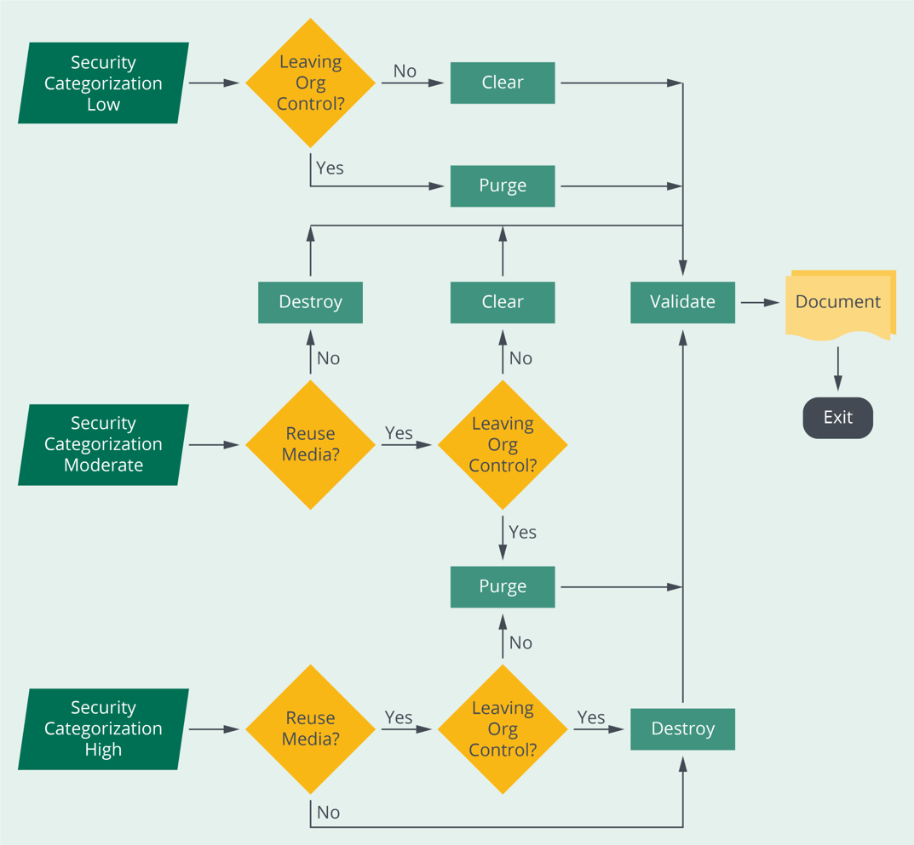

Organizations may decommission existing applications and
software for a variety of reasons. Regardless, there must be a process in place for
secure decommissioning. Decommissioning software may also have operating system,
firmware, hardware, and data disposal considerations. Security practitioners need to
take a systems life cycle approach when dealing with decommissioning.
Objectives
Elaborate software decommissioning policy and processes.
Overview
When decommissioning software, an organization may be compelled
to comply with local, federal, or industry compliance. Governance must be addressed,
and organizational policy and procedures must be established for the purpose of
decommissioning software and other corresponding assets. When software is
decommissioned, data may need to be retained or deleted. If retention requirements
are met and data no longer needs to be maintained, it must be securely erased to
address the risk of data remanence on premise or in the cloud.
End-of-Life Policies
Just as the deployment of software is governed by a plan and
necessary approvals from the , so is disposal.
There should be a process in place for safe decommissioning of software.
The first requirement in disposal of software and its related
data and documentation is to establish an policy. EOL policies
outline processes and expectations for transitioning to a newer platform. NIST
SP 800-30—Guide for Conducting Risk Assessments states that risk management
activities should be performed for EOL system components to ensure hardware and
software disposal do not inadvertently create unmanaged risks.
General EOL Guidance
The EOL period for a software version begins when the developer of that software
sends an EOL announcement.
The EOL announcements should be made approximately six months prior to the EOL
date and contain an official timeline describing discontinuation plans,
including an end-of-support date.
If a direct replacement product is offered, the developer may shorten the EOL
period. Support contracts should not extend past the EOL date of software
versions.
Software Specific EOL Guidance
Executable code, help files, etc., should be deinstalled and disposed of.
Secure deinstallation techniques and tools should be employed.
The secure deletion of all executable, support, data, and documentation files
associated with the software should take place. This may include
application-specific data stores, temp files, setup files, configuration files,
metadata files, read-me files, and user documentation.
Deletion of all directory structures associated with the software should occur.
Secure archiving of source code and documentation should take place.
Documenting, date/time stamping, digital signing, and the secure storing of
accurate records of the decommissioning process is essential.
Credential Removal, Configuration
Removal, and License Cancellation
In the case of organizational operations, decommissioning
software and tangential infrastructure may be a complex task, depending on the
nature of the software/service being decommissioned. When security practitioners
draft procedures that support the organizational EOL policy, they must consider the
removal of credentials, configuration files, and sensitive user data. Also depending
on the architecture and composition of the software system, third-party component
licenses must also be identified and canceled if no longer needed.
The handling of licenses and credentials can be a major headache
for software development projects if they are not managed correctly. The most
effective approach is to have a series of best practices that can be followed,
including the following:
Ensure that there is an effective policy for software licensing, configuration,
and credential management. Such a policy should address what software (and which
versions of such software) is authorized, approved, and supported. This applies
to proprietary, open source, or cloud-based software, regardless of whether it
is commercial, freeware, or shareware. This policy should also articulate when
obsolete software is no longer supported. Communicate the policies about license
violation and penalties and educate the users.
Develop and maintain an inventory of all authorized software through manual,
automated, or a combination of manual and automated processes. Identify
seldom-used licenses and any obsolete software (commercial, open source,
freeware, and shareware) that is used by personnel. Develop a blacklist of
software that should be prevented from installation (e.g., unauthorized
software), and enforce it through processes and appropriate technologies.
Retire old applications and decrease IT complexities. Reduce the risk of
software that is no longer supported and for which security patches may not be
developed.
Collect records of all software licenses in a central repository. Include
commercial, open-source, shareware, freeware, and public domain software. Use
the repository to manage the purchases and support information. Run reports and
match licenses to installed software.
Data Archiving
Data archiving is the process of identifying and moving inactive
data from current production systems and into specialized long-term archival storage
systems. Moving inactive data out of production systems reduces infrastructure
resource requirements, while reducing the potential exposure or exfiltration of
data. Organizations rely on a combination of on-premises, off-site cold storage and
cloud archiving services based on business needs and compliance considerations. When
encrypting archived or backup files, organizations should pay equal attention to key
management practices. In a worst-case scenario, bad key management could lead to the
loss of access to the entire archive.
Data Disposition
When software is decommissioned, the faith of the data used by
the software may not be the same unless data retention requirements have been met. A
key part of data protection procedures is safely disposing of data once it is no
longer needed. Failure to do so may result in data breaches and/or compliance
failures. Safe disposal procedures are designed to ensure that there are no files,
pointers, or data remanence left behind within a system that could be used to
restore the original data.
Media sanitization is one key element in assuring
confidentiality. For organizations to have appropriate controls on the information
they are responsible for safeguarding, they must properly safeguard used media. Rich
sources of illicit information collection often include improperly sanitized
electronic media.
Media can often flow in and out of organizational control in a
variety of ways. Consider the insecure handling of paper in recycle bins, machines
out to vendors for equipment repairs, and components hot swapped into other systems
in response to hardware or software failures. These potential vulnerabilities can be
mitigated through proper understanding of where information is located, what that
information is and how to protect it.
The need for media sanitization should be apparent. Methods to
conduct media sanitization should be identified and developed before arriving at the
disposal phase in the system life cycle. At the start of system development, when
the initial system security plan is developed, media sanitization controls should be
developed, documented and deployed. One of the key decisions that will affect the
ability to conduct sanitization is choosing what media will be used within the
system. This figure outlines a sanitization and disposition decision flow.

Figure 9: Media Sanitization
Assessing Risks and Applying
Destructive Techniques
For storage devices containing magnetic media, a single
overwrite pass with a fixed pattern, such as binary zeros, typically hinders
recovery of data, even if state-of-the-art laboratory techniques are applied to
attempt a retrieval. One major drawback of relying solely upon the native read/write
interface for performing the overwrite procedure is that areas not currently mapped
to active logical block addressing (LBA) addresses are not dealt with. Dedicated
sanitize commands support addressing these areas more effectively. The use of such
commands results in a trade-off because, although they should more thoroughly
address all areas of the media, using these commands also requires trust and
assurance from the vendor that the commands have been implemented as expected.
Users who have become accustomed to relying on overwrite
techniques on magnetic media and who have continued to apply these techniques as
media types evolved (e.g., flash memory-based devices) may be exposing their data to
increased risk of unintentional disclosure. Although the host interface (e.g.,
Advanced Technology Attachment [ATA], Small Computer System Interface [SCSI]) may be
the same or similar across devices with varying underlying media types; it is
critical that the sanitization techniques be carefully matched to the media.
Destructive techniques for some media types may become more
difficult or even impossible to apply in the future. Traditional techniques, such as
degaussing magnetic media, become more complicated as the media evolves, because
some emerging variations of magnetic recording technologies incorporate media with
higher coercivity (magnetic force). As a result, existing degaussers may not have
sufficient force to effectively degauss such media.
Applying destructive techniques to electronic storage media
(e.g., flash memory) is also becoming more challenging as the necessary particle
size for commonly applied grinding techniques goes down proportionally to any
increases in flash memory storage density. Flash memory chips already present
challenges. They occasionally damage grinders due to the hardness of the component
materials, and this problem will get worse as grinders attempt to grind the chips
into even smaller pieces.
Cryptographic erase (CE) is an emerging sanitization technique
that can be used in some situations when data is encrypted as it is stored on media.
With CE, media sanitization is performed by sanitizing the cryptographic keys used
to encrypt the data, as opposed to sanitizing the storage locations on media
containing the encrypted data itself. CE techniques are typically capable of
sanitizing media quickly and could support partial sanitization, a technique where a
subset of storage media is affected. Sometimes referred to as selective
sanitization, partial sanitization has potential applications in cloud computing and
mobile devices.
Operational use of CE today presents some challenges. In some
cases, it may be difficult to verify that CE has effectively sanitized media. If
verification cannot be performed, organizations should use alternative sanitization
methods that can be verified, or they should use CE in combination with a verifiable
sanitization technique.
For additional guidance on sanitization, NIST Special
Publication 800-88—Guidelines for Media Sanitization offers guidance for
the disposal of data that can be mapped to software security
considerations.17
Decommission Applications (2.6)
Organizations may decommission existing applications and software for a variety of reasons. Regardless, there must be a process in place for secure decommissioning. Decommissioning software may also have operating system, firmware, hardware, and data disposal considerations. Security practitioners need to take a systems life cycle approach when dealing with decommissioning.
Objectives
Overview
When decommissioning software, an organization may be compelled to comply with local, federal, or industry compliance. Governance must be addressed, and organizational policy and procedures must be established for the purpose of decommissioning software and other corresponding assets. When software is decommissioned, data may need to be retained or deleted. If retention requirements are met and data no longer needs to be maintained, it must be securely erased to address the risk of data remanence on premise or in the cloud.
End-of-Life Policies
Just as the deployment of software is governed by a plan and necessary approvals from the , so is disposal. There should be a process in place for safe decommissioning of software.
The first requirement in disposal of software and its related data and documentation is to establish an policy. EOL policies outline processes and expectations for transitioning to a newer platform. NIST SP 800-30—Guide for Conducting Risk Assessments states that risk management activities should be performed for EOL system components to ensure hardware and software disposal do not inadvertently create unmanaged risks.
General EOL Guidance
Software Specific EOL Guidance
Credential Removal, Configuration Removal, and License Cancellation
In the case of organizational operations, decommissioning software and tangential infrastructure may be a complex task, depending on the nature of the software/service being decommissioned. When security practitioners draft procedures that support the organizational EOL policy, they must consider the removal of credentials, configuration files, and sensitive user data. Also depending on the architecture and composition of the software system, third-party component licenses must also be identified and canceled if no longer needed.
The handling of licenses and credentials can be a major headache for software development projects if they are not managed correctly. The most effective approach is to have a series of best practices that can be followed, including the following:
Data Archiving
Data archiving is the process of identifying and moving inactive data from current production systems and into specialized long-term archival storage systems. Moving inactive data out of production systems reduces infrastructure resource requirements, while reducing the potential exposure or exfiltration of data. Organizations rely on a combination of on-premises, off-site cold storage and cloud archiving services based on business needs and compliance considerations. When encrypting archived or backup files, organizations should pay equal attention to key management practices. In a worst-case scenario, bad key management could lead to the loss of access to the entire archive.
Data Disposition
When software is decommissioned, the faith of the data used by the software may not be the same unless data retention requirements have been met. A key part of data protection procedures is safely disposing of data once it is no longer needed. Failure to do so may result in data breaches and/or compliance failures. Safe disposal procedures are designed to ensure that there are no files, pointers, or data remanence left behind within a system that could be used to restore the original data.
Media sanitization is one key element in assuring confidentiality. For organizations to have appropriate controls on the information they are responsible for safeguarding, they must properly safeguard used media. Rich sources of illicit information collection often include improperly sanitized electronic media.
Media can often flow in and out of organizational control in a variety of ways. Consider the insecure handling of paper in recycle bins, machines out to vendors for equipment repairs, and components hot swapped into other systems in response to hardware or software failures. These potential vulnerabilities can be mitigated through proper understanding of where information is located, what that information is and how to protect it.
The need for media sanitization should be apparent. Methods to conduct media sanitization should be identified and developed before arriving at the disposal phase in the system life cycle. At the start of system development, when the initial system security plan is developed, media sanitization controls should be developed, documented and deployed. One of the key decisions that will affect the ability to conduct sanitization is choosing what media will be used within the system. This figure outlines a sanitization and disposition decision flow.
Figure 9: Media Sanitization
Assessing Risks and Applying Destructive Techniques
For storage devices containing magnetic media, a single overwrite pass with a fixed pattern, such as binary zeros, typically hinders recovery of data, even if state-of-the-art laboratory techniques are applied to attempt a retrieval. One major drawback of relying solely upon the native read/write interface for performing the overwrite procedure is that areas not currently mapped to active logical block addressing (LBA) addresses are not dealt with. Dedicated sanitize commands support addressing these areas more effectively. The use of such commands results in a trade-off because, although they should more thoroughly address all areas of the media, using these commands also requires trust and assurance from the vendor that the commands have been implemented as expected.
Users who have become accustomed to relying on overwrite techniques on magnetic media and who have continued to apply these techniques as media types evolved (e.g., flash memory-based devices) may be exposing their data to increased risk of unintentional disclosure. Although the host interface (e.g., Advanced Technology Attachment [ATA], Small Computer System Interface [SCSI]) may be the same or similar across devices with varying underlying media types; it is critical that the sanitization techniques be carefully matched to the media.
Destructive techniques for some media types may become more difficult or even impossible to apply in the future. Traditional techniques, such as degaussing magnetic media, become more complicated as the media evolves, because some emerging variations of magnetic recording technologies incorporate media with higher coercivity (magnetic force). As a result, existing degaussers may not have sufficient force to effectively degauss such media.
Applying destructive techniques to electronic storage media (e.g., flash memory) is also becoming more challenging as the necessary particle size for commonly applied grinding techniques goes down proportionally to any increases in flash memory storage density. Flash memory chips already present challenges. They occasionally damage grinders due to the hardness of the component materials, and this problem will get worse as grinders attempt to grind the chips into even smaller pieces.
Cryptographic erase (CE) is an emerging sanitization technique that can be used in some situations when data is encrypted as it is stored on media. With CE, media sanitization is performed by sanitizing the cryptographic keys used to encrypt the data, as opposed to sanitizing the storage locations on media containing the encrypted data itself. CE techniques are typically capable of sanitizing media quickly and could support partial sanitization, a technique where a subset of storage media is affected. Sometimes referred to as selective sanitization, partial sanitization has potential applications in cloud computing and mobile devices.
Operational use of CE today presents some challenges. In some cases, it may be difficult to verify that CE has effectively sanitized media. If verification cannot be performed, organizations should use alternative sanitization methods that can be verified, or they should use CE in combination with a verifiable sanitization technique.
For additional guidance on sanitization, NIST Special Publication 800-88—Guidelines for Media Sanitization offers guidance for the disposal of data that can be mapped to software security considerations.17
17 National Institute of Standards and Technology; NIST Special Publication 800-88—Guidelines for Media Sanitization; https://nvlpubs.nist.gov/nistpubs/SpecialPublications/NIST.SP.800-88r1.pdf; retrieved May 2023.